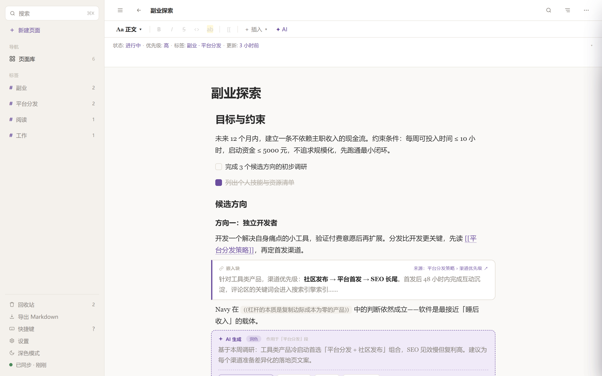
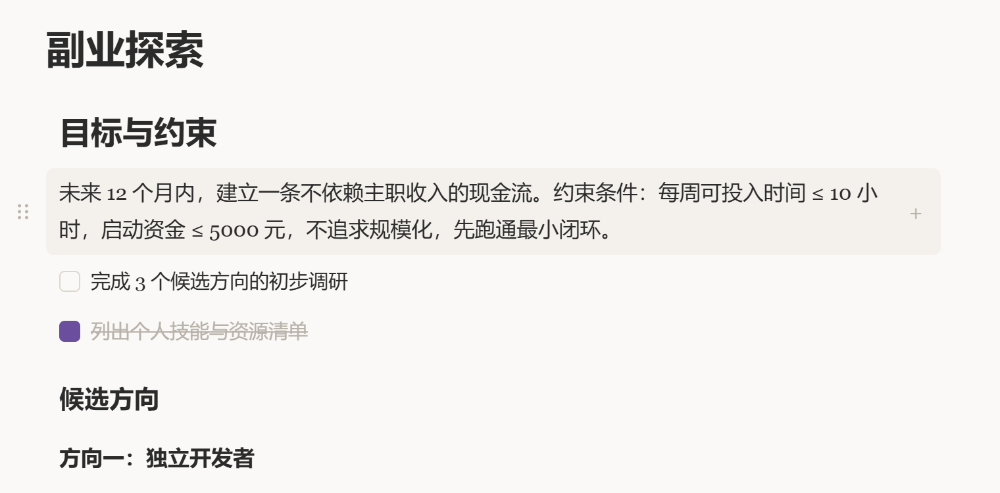
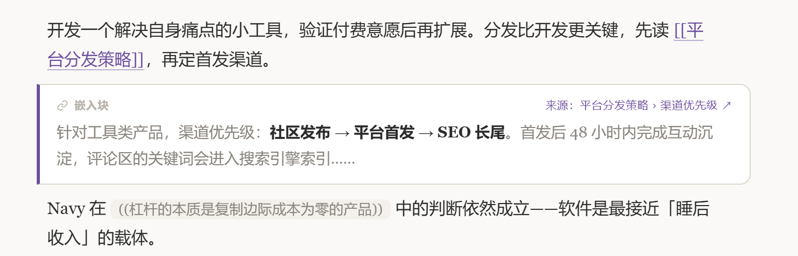
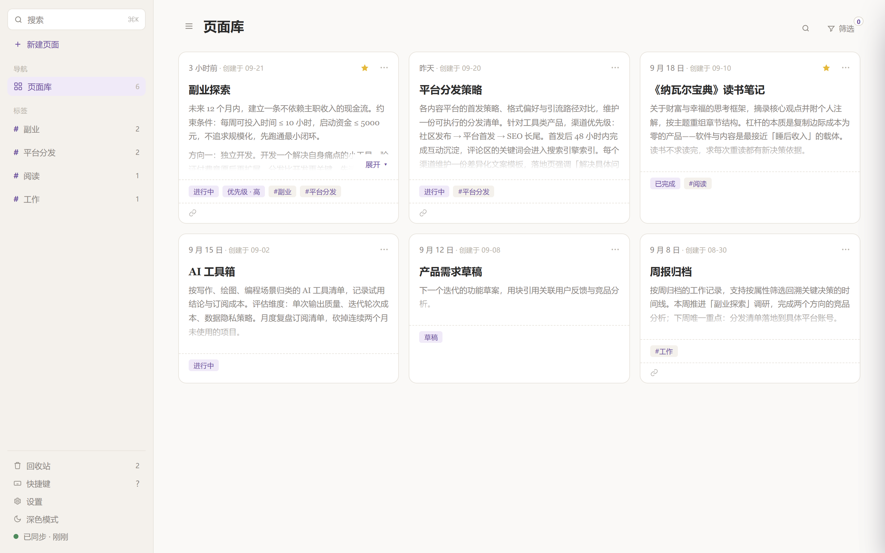
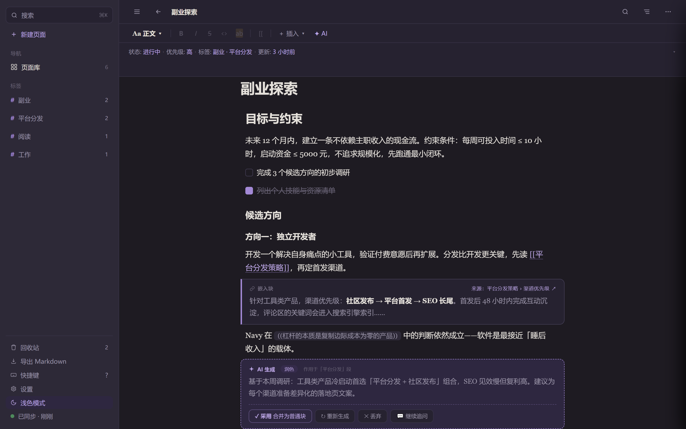

大纲与双链笔记 · 本地优先
每一段文字，
都有身份。
墨契把写作和整理放在同一个工作区。先写自然段，再用缩进、折叠和双链把它组织起来——每个段落都独立存在，可以被引用、移动、追踪。

01 — 大纲
写的时候像大纲，读的时候像文章
每一段就是一个块。Tab 缩进整棵子树，⌘↑ 折叠，拖块把手可以整组移动——结构乱了随时能改回来，改错了 ⌘Z 撤销。

02 — 双链
引用一个页面，或者引用一句话
输入 [[ 引用一个页面，输入 (( 引用一个具体的块。反向链接自动维护；块的身份是稳定的，页面改名不会让已有的链接失效。

03 — AI
AI 的结果是新的一块，不是替换
总结、提取行动、基于本篇自由问答。结果作为新的块插进来，原文一个字都不动。一次生成只占一步撤销——不满意，⌘Z 整块撤掉。
04 — 页面库与外观
打开是一屏卡片，不是一列文件名
页面库里每张卡片都来自真实内容——页名、摘要、属性、标签、反链数量。列表与简约两种密度随意切换；浅色、深色、跟随系统，颜色和字体不另起一套。


05 — 可以信的部分
这几条写死在产品文档里
- 用户输入的原文不会被 AI 或自动保存覆盖。
- 块的身份稳定，重命名不会让双链失效。
- 结构操作可以撤销，重载后结构和正文一致。
- 服务异常只影响对应功能，不阻塞普通写作。
笔记存在本机的 SQLite 里。没有账号，没有云端。AI 走你自己的密钥，密钥只存在本机。
06 — 当前状态
还没有安装包。
V2a（大纲与日常编辑）已关闭，当前版本 0.2.0，下一步是 V2b 同步与第二端。下表是产品文档里的口径，不是路线图承诺——没做的就写没做。
| 能力 | 状态 |
|---|---|
| 大纲与块结构、双链、五类属性、标签、回收站、多选、AI 结果插入 | 已交付 |
| 页面库与编辑器的视觉重构 | 已交付 |
| 同步与第二端（Android 壳） | V2b · 未开工 |
| 页面星标、置顶 | V2b · 未开工 |
| 智能检索与双链建议 | V2c · 未开工 |
| 全文搜索、导出 Markdown、图片与附件 | V3 · 未开始 |
| 移动端触控交互 | 0.6.0 · 未开工 |
| 关系图谱与图谱问答 | 暂不在计划内 |
想在上线时收到通知，发一封邮件就行：
phonedu@users.noreply.github.com